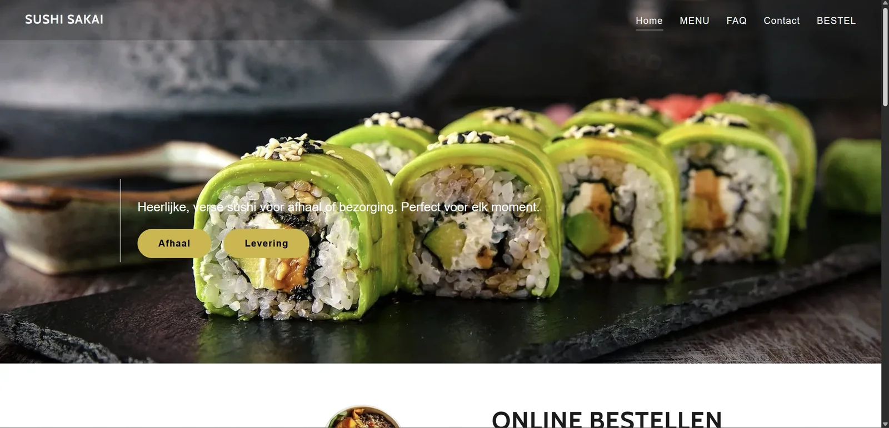
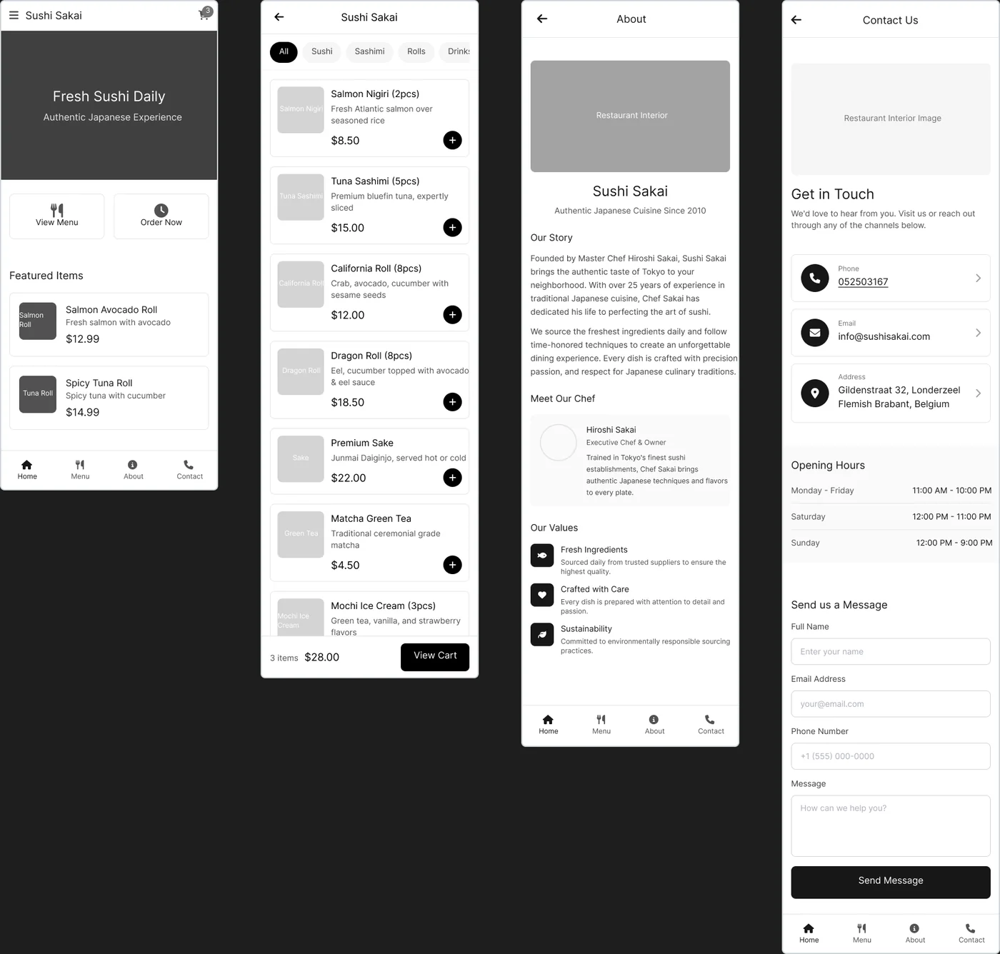
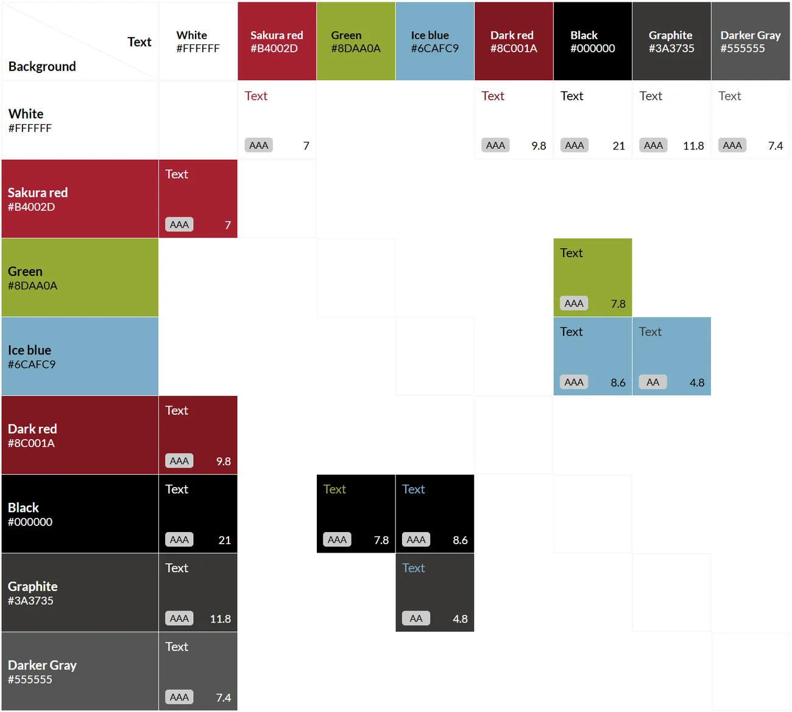
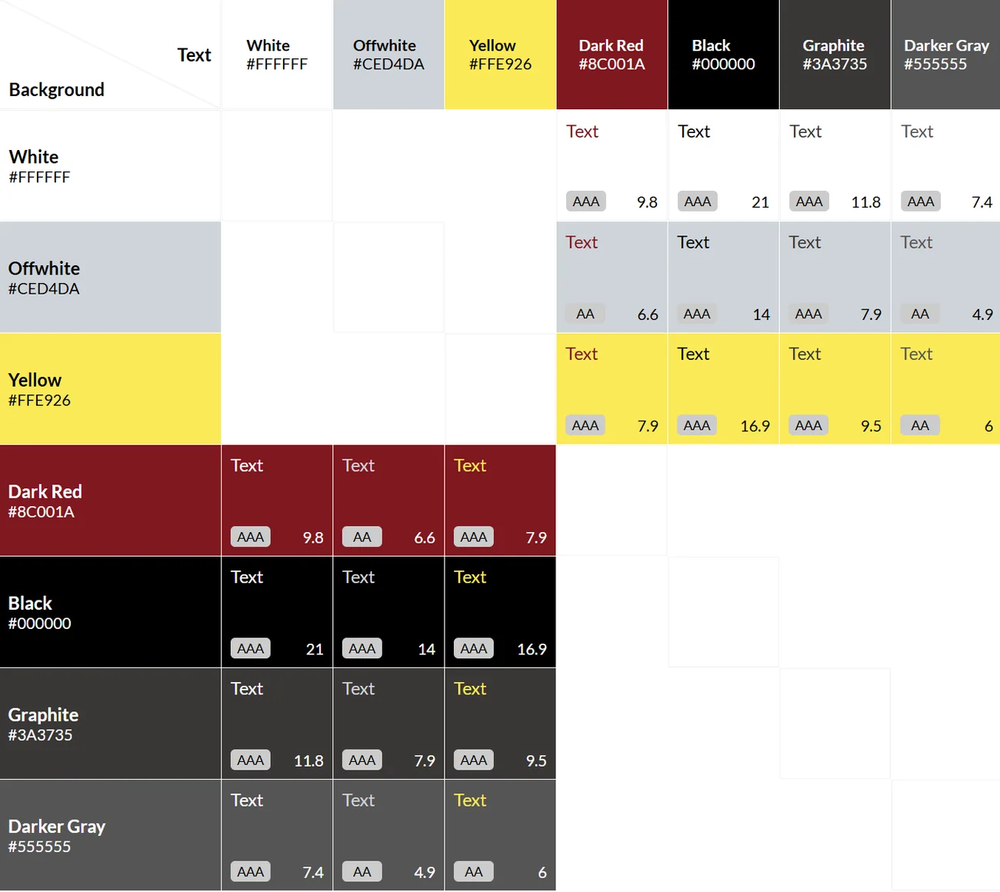
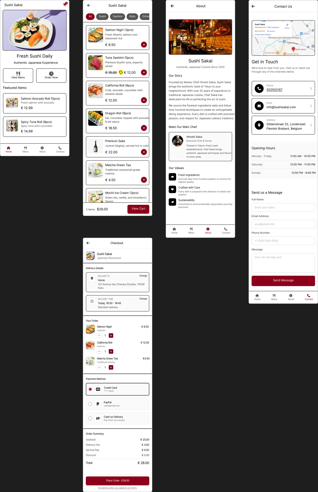
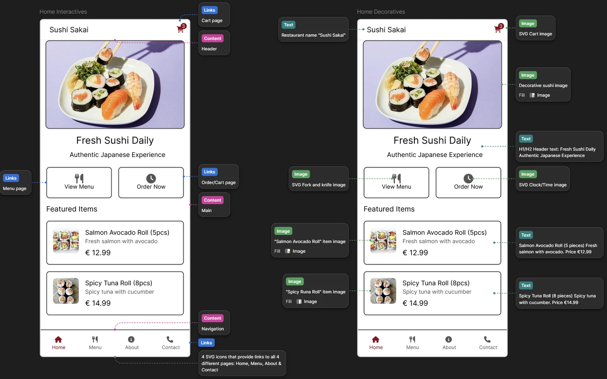
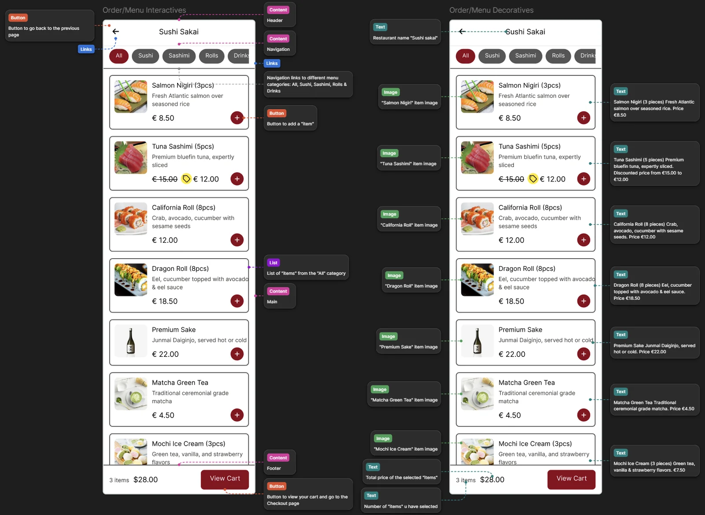
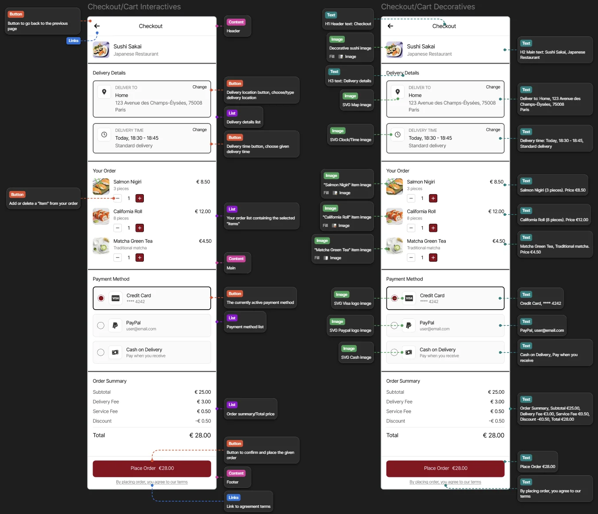
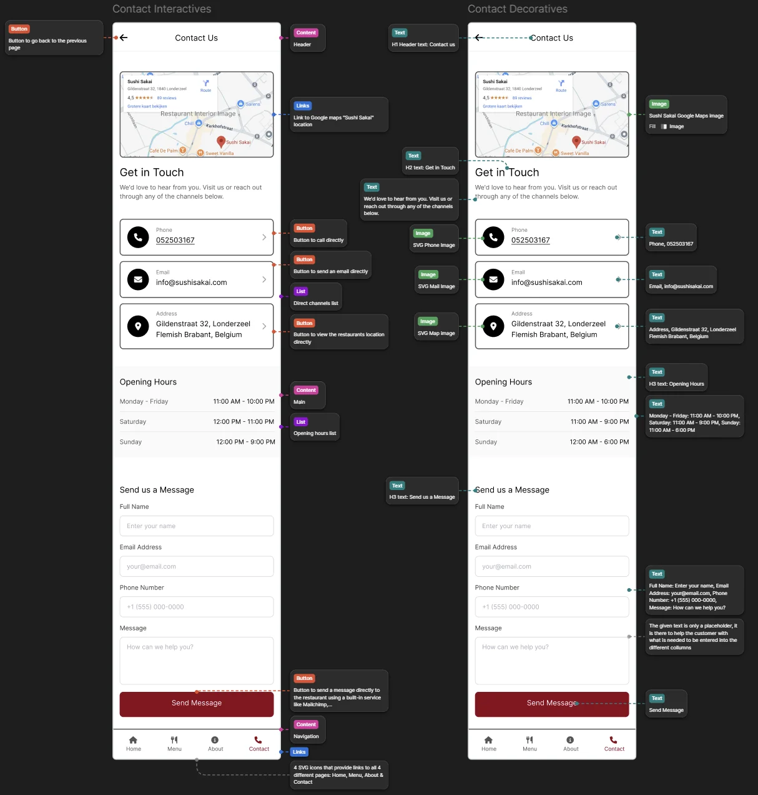

UX / UI · User Centered Design · Toegankelijkheid
Sushi Sakai.
Voor een individuele opdracht ontwierp ik een mobiel appconcept voor Sushi Sakai. Ik vertrok van hun bestaande website en bestelomgeving en werkte in Figma van wireframes naar een visueel ontwerp met toegankelijkheid als uitgangspunt.
- Mijn rol
- Zelfstandig UX/UI-ontwerp
- Opdracht
- User Centered Design
- Medium
- Mobiel appconcept
- Tool
- Figma
01 / Vertrekpunt
Van de bestaande website naar een mobiel concept.
Sushi Sakai had al een website met een aparte bestelomgeving. Die twee ervaringen gebruikte ik als referentie voor mijn opdracht. Ik onderzocht hoe ik de informatie, het menu en het bestelproces in één samenhangend mobiel ontwerp kon presenteren.
Het beeld hieronder komt uit mijn projectpresentatie en toont de website zoals ik die destijds gebruikte. De huidige website ↗ en bestelpagina ↗ kunnen inmiddels veranderd zijn. Vooral de bestelpagina ziet er nu anders uit dan tijdens mijn ontwerpproces.


02 / Wireframes
Eerst de structuur, daarna de vormgeving.
Mijn eerste schermen werkten de belangrijkste onderdelen uit: home, menu, over Sushi Sakai en contact. In grijstinten kon ik de volgorde van de informatie en de belangrijkste acties beoordelen voordat beelden en merkkleuren de aandacht trokken.


03 / Kleur en contrast
Merkgevoel afwegen tegen leesbaarheid.
Ik onderzocht meerdere kleurcombinaties in contrastmatrices. De eerste verkenning gebruikte onder meer sakurarood, groen en ijsblauw. Daarna vergeleek ik een compacter palet met donkerrood, wit, gebroken wit en geel. Zo kon ik kleuren voor tekst en achtergronden kiezen op basis van contrast. Wit op donkerrood kwam in mijn matrix bijvoorbeeld uit op een verhouding van 9,8:1.




04 / Eindontwerp
Een herkenbare flow van menu tot bestelling.
In het uitgewerkte ontwerp gaf ik de schermen echte beelden en een vaste visuele stijl. De navigatie blijft herkenbaar, de menukaarten tonen productinformatie en prijs samen, en het afrekenscherm groepeert bezorging, bestelling, betaling en totaal. De schermen tonen een ontwerpconcept. De producten, prijzen en gegevens in de beelden geven niet de actuele situatie van het restaurant weer.


05 / Accessibility-annotaties
Ook vastleggen hoe de schermen moeten werken.
Mijn opdracht stopte niet bij de beelden. Ik annoteerde de schermen in Figma en maakte onderscheid tussen interactieve onderdelen, inhoud en decoratie. Daarbij beschreef ik bijvoorbeeld de bedoeling van knoppen en links, tekstalternatieven voor afbeeldingen, koppen en labels, en de volgorde van de inhoud. In de presentatie koppelde ik die keuzes aan relevante WCAG-succescriteria, zoals focusvolgorde, consistente navigatie en doelgrootte.
Deze annotaties leggen mijn ontwerpintentie vast. Een technische toegankelijkheidstest van een gebouwde app is hiermee niet gedocumenteerd.








06 / Bekijk mijn bronbestand
Het volledige proces staat in Figma.
De beelden hierboven komen uit mijn projectpresentatie. In het Figma-bestand kun je de drie pagina’s met wireframes, kleur- en eindontwerp en alle annotaties zelf bekijken.